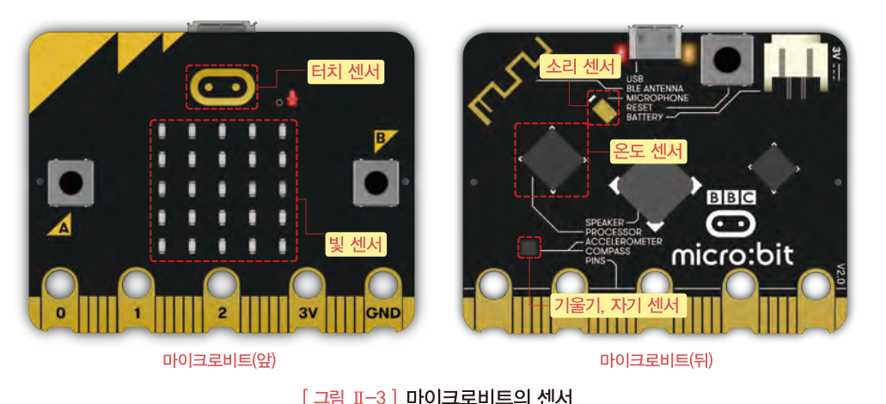
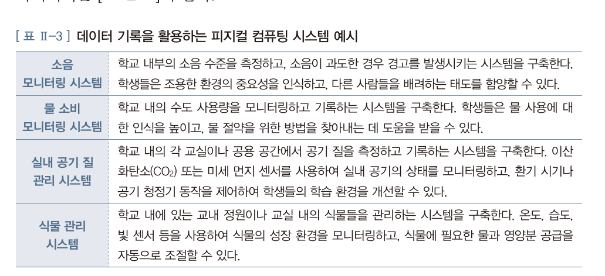
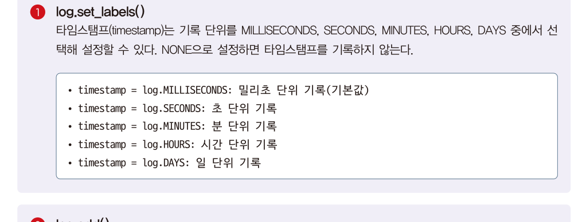
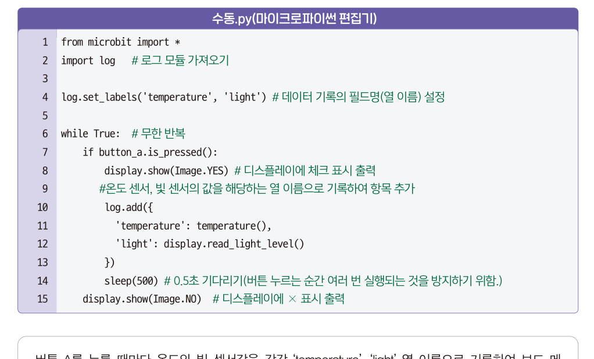
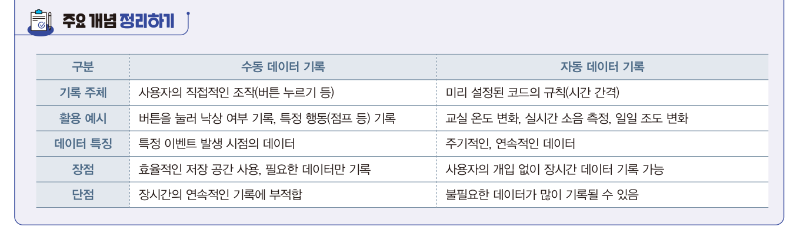
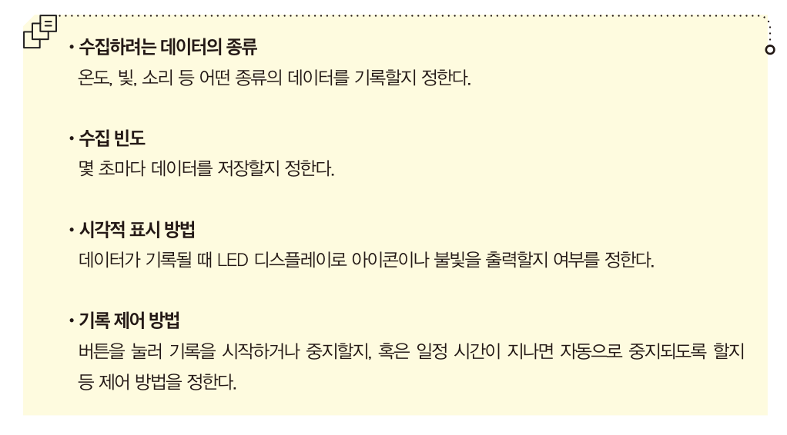
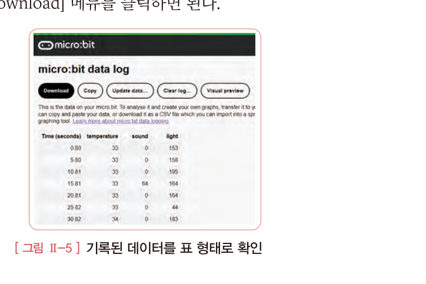
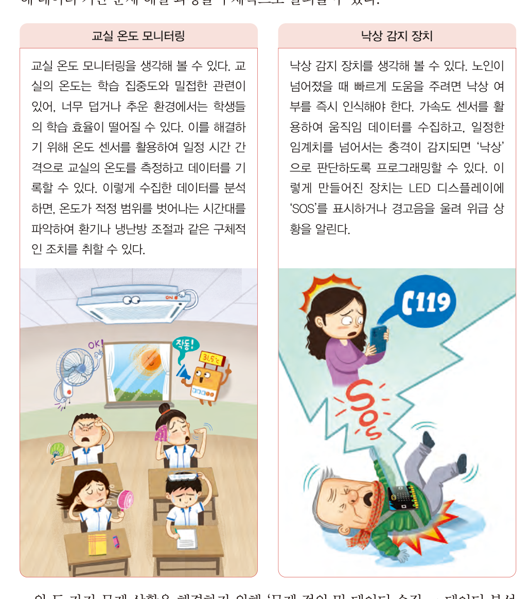
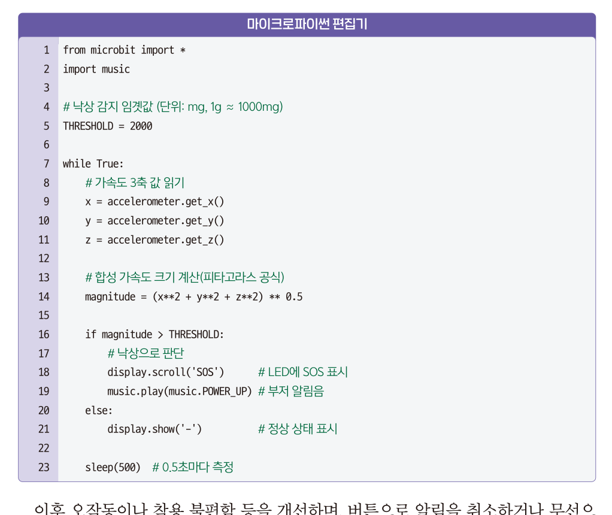
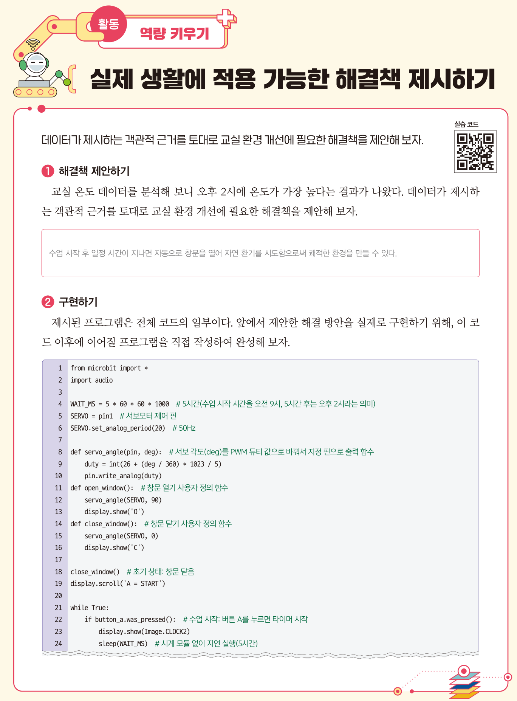

<!DOCTYPE html><html lang="ko"><head><meta charset="utf-8"><meta name="viewport" content="width=device-width,initial-scale=1">
<title>5회차 · 센서 데이터 수집과 피지컬 컴퓨팅</title>
<link rel="stylesheet" href="style.css?v=9">
</head><body>

<div class="lhead" id="lhead"></div>
<div class="bnav" id="bnav"></div>
<div id="blocks"></div>
<div id="timer"></div>

<footer><div class="wrap-n">
  2026-2 온라인 공동교육과정 · 인공지능 융합프로젝트 — 대전대신고등학교 하진수<br>
  교과서 Ⅱ. 융합 프로젝트를 위한 기술 <b>76~87쪽</b> ·
  <a href="index.html" style="color:var(--accent)">운영실 메인</a> ·
  <a href="lesson04.html" style="color:var(--accent)">← 이전 회차</a> ·
  <button class="tbtn ghost" style="margin-left:6px" onclick="resetLesson()">이 회차 기록 초기화</button>
</div></footer>

<script>
const LESSON={
n:5,date:"2026.09.28",dow:"월",time:"17:00~21:00",ch:"17~20차시",mode:"원격 수업",
title:"센서 데이터 수집과 피지컬 컴퓨팅",
goals:[
 "센서를 활용하여 환경 데이터를 수집 · 분석할 수 있다.",
 "실생활의 문제를 분석하여 합리적인 해결 방안을 도출할 수 있다."],
breaks:[{after:3,mins:10},{after:4,mins:10}],
blocks:[

/* ============ 0. 도입 ============ */
{kind:"open",nav:"도입",mins:10,title:"7일 동안 5초마다 온도를 재려면",
 sub:"지난 회차에는 남이 만든 데이터를 받아 썼습니다. 오늘은 데이터를 <b>직접 만듭니다.</b>",
 sections:[
 {n:"01",h:"오늘의 질문",
  html:`<div class="hook"><div class="hk">Hook</div>
   <div class="hq">일주일 동안 5초마다 교실 온도를 재야 합니다.<br>누가, 어떻게 하겠습니까?</div>
   <p>사람이 한다면 <b>120,960번</b>을 재고 적어야 합니다. 밤에도, 주말에도.
   4회차에서는 통계청이 이미 만들어 둔 산불 데이터를 받아 썼습니다. 그런데 <b>&ldquo;우리 교실&rdquo;의 데이터는 세상 어디에도 없습니다.</b>
   없는 데이터는 <b>직접 만들어야</b> 합니다. 오늘 배우는 것이 그 방법입니다.</p></div>
   <div class="cnt2">
    <div class="big2"><b id="lgN">—</b><span id="lgLab">번 기록됩니다</span></div>
    <div class="msg" id="lgMsg">아래 값을 바꿔 보세요.</div>
    <div class="row" style="display:flex;gap:14px;flex-wrap:wrap;margin-top:16px">
     <div style="flex:1 1 200px"><label style="display:block;font-size:12px;color:var(--mut);margin-bottom:6px;font-weight:600">측정 주기 — <b id="lgSecL" style="color:var(--accent);font-family:var(--serif);font-size:16px">5</b>초마다</label>
      <input type="range" id="lgSec" min="1" max="3600" step="1" value="5" style="width:100%;accent-color:#d8b45a"></div>
     <div style="flex:1 1 200px"><label style="display:block;font-size:12px;color:var(--mut);margin-bottom:6px;font-weight:600">기록 기간 — <b id="lgDayL" style="color:var(--accent);font-family:var(--serif);font-size:16px">7</b>일</label>
      <input type="range" id="lgDay" min="1" max="30" step="1" value="7" style="width:100%;accent-color:#d8b45a"></div>
    </div>
    <div class="bars" style="margin-top:16px">
     <div class="bar" style="display:grid;grid-template-columns:130px 1fr 88px;gap:11px;align-items:center;font-size:12.5px">
      <div style="color:var(--mut)">마이크로비트 메모리</div>
      <div style="height:20px;background:rgba(255,255,255,.05);border-radius:2px;overflow:hidden"><div id="lgFill" style="height:100%;transition:width .3s"></div></div>
      <div id="lgPct" style="text-align:right;font-family:var(--serif);font-weight:800;font-size:14px">—</div></div>
    </div>
   </div>
   <div class="ask"><div class="ah">발문</div>
   <ol>
    <li>메모리가 가득 차지 않게 하려면 <b>무엇을</b> 바꿔야 할까요? 주기인가요, 기간인가요?</li>
    <li>&ldquo;5초마다&rdquo;와 &ldquo;1시간마다&rdquo; 중 <b>교실 온도</b>에 맞는 것은 어느 쪽일까요? 왜 그렇습니까?</li>
   </ol></div>`},
 {n:"02",h:"출결과 준비 확인",
  html:`<div class="box"><b>확인해 주세요</b>
   <ul>
    <li>카메라를 켜고 이름을 <b>학교명_이름</b> 형식으로 바꿔 주세요.</li>
    <li>교과서 <b>76~87쪽</b>을 펴 두세요. Ⅱ단원 <b>2. 센서 데이터 수집과 피지컬 컴퓨팅</b>입니다.</li>
    <li><b>micro:bit v2</b>가 있는 학생은 USB 케이블로 연결해 두세요.</li>
    <li><b>없어도 괜찮습니다.</b> MakeCode 시뮬레이터로 똑같이 실습하며, 감점은 없습니다.</li>
   </ul>
   <div class="mini"><span>출결 1차 · 지금</span><span>2차 · 강의 종료 시</span><span>3차 · 토의 종료 시</span></div></div>
   <div class="reslist">
    <a class="res exp" href="https://python.microbit.org" target="_blank" rel="noreferrer">
     <div class="rk">실습 환경 · 마이크로파이썬 편집기</div><div class="rt">python.microbit.org</div>
     <div class="rd">설치 없이 브라우저에서 코드를 쓰고 <b>시뮬레이터로 실행</b>할 수 있습니다. 기기가 없어도 오늘 실습이 가능합니다.</div>
     <div class="ru">python.microbit.org</div></a>
    <a class="res exp" href="https://makecode.microbit.org" target="_blank" rel="noreferrer">
     <div class="rk">실습 환경 · 블록 코딩</div><div class="rt">MakeCode</div>
     <div class="rd">블록으로 만든 뒤 파이썬으로 변환해 볼 수 있습니다. 코드가 낯설면 여기서 시작하세요.</div>
     <div class="ru">makecode.microbit.org</div></a>
   </div>`},
 {n:"03",h:"교과서가 던지는 질문",
  lead:"교과서 76쪽 &lsquo;이번 시간 과제&rsquo;입니다.",
  html:`<div class="box warn"><b class="t">이번 시간 과제</b>
   온도나 습도처럼 일정한 시간 간격으로 변하는 데이터를 기록하고 싶다고 가정해 보자.
   매번 직접 수치를 확인하고 손으로 적는 일은 매우 번거롭고 정확성도 떨어진다. 특히 장시간 동안 데이터를 수집하려면 사람이 계속 자리를 지켜야 하는 어려움이 따르기도 한다.
   <br><br>이러한 문제를 해결하는 데 <b>데이터 로거(datalogger)</b>를 사용한다. 데이터 로거는 <b>센서로 측정한 값을 자동으로 기록하고 저장하는 장치</b>이다.
   예를 들어 마이크로비트를 데이터 로거로 활용하면, <b>전원이 없는 야외나 특정 장소에 두어도</b> 측정한 값을 자동으로 보드에 저장할 수 있어 편리하게 데이터를 수집할 수 있다.</div>
   <div class="box tip"><b>데이터 기반 문제 해결이란</b> · 문제를 정의하고, 데이터를 수집·분석하여 합리적인 해결책을 제안하는 과정입니다.
   이 과정에서 중요한 것은 <b>단순한 추측이 아니라 실제 데이터를 활용해 과학적이고 논리적으로 판단</b>하는 것입니다. (교과서 76쪽)</div>`,
  pages:[{p:76,t:"2. 센서 데이터 수집과 피지컬 컴퓨팅 · 학습 목표 · 이번 시간 과제"}]},
 {n:"04",h:"오늘의 흐름",
  html:`<div class="tw"><table style="min-width:600px">
   <thead><tr><th style="width:80px">시간</th><th style="width:80px">교과서</th><th>하는 일</th></tr></thead>
   <tbody>
    <tr><td><b>강의 ①</b></td><td>77쪽</td><td>마이크로비트에 무엇이 들어 있나 · 피지컬 컴퓨팅으로 무엇을 만들 수 있나</td></tr>
    <tr><td><b>강의 ②</b></td><td>78~81쪽</td><td><b>자동 기록 vs 수동 기록</b> · 기록 계획 세우기 · 데이터 꺼내 오기</td></tr>
    <tr><td><b>강의 ③</b></td><td>82~86쪽</td><td>데이터 기반 문제 해결 — 교실 온도 모니터링 · <b>낙상 감지 장치</b></td></tr>
    <tr><td><b>과제</b></td><td>87쪽</td><td>실제 생활에 적용 가능한 <b>해결책 제시하기</b> — 창문 자동 개폐</td></tr>
   </tbody></table></div>
   <div class="box tip"><b>오늘의 한 문장</b> · <b>없는 데이터는 직접 만든다.</b>
   7회차 스마트 화분 프로젝트에서 여러분이 실제로 하게 될 일입니다.</div>`}]},

/* ============ 1. 강의 ① ============ */
{kind:"lecture",nav:"강의 ①",mins:30,title:"데이터 기록과 마이크로비트",
 sub:"17차시 — 손바닥만 한 보드 안에 센서가 몇 개 들어 있을까요. 교과서 77쪽.",
 sections:[
 {n:"01",h:"데이터 기록이란",
  lead:"데이터 기록은 <b>시간 경과에 따른 데이터를 기록</b>하는 것을 의미합니다.",
  html:`<p>특히 과학 실험에서 환경 또는 물리적 데이터를 기록하는 데 유용하게 사용됩니다.
   예를 들어 <b>낙하하는 물체의 가속도를 짧은 시간 동안 측정</b>하거나, <b>하루 동안 소리 수준을 기록</b>하거나,
   <b>일주일 이상 동안 온도나 빛의 밝기 수준을 기록</b>하는 등 단기 또는 장기간에 걸쳐 데이터를 기록할 수 있습니다.</p>
   <div class="box"><b>데이터 직접 수집</b> · 가공되지 않은 <b>원시 데이터</b>를 조사자가 직접 수집하는 방법입니다.
   우리 주변에 다양한 형태의 방대한 데이터가 존재하지만 <b>정작 조사자에게 필요한 데이터가 없을 때</b>,
   여러 센서나 플랫폼을 활용하여 필요한 데이터를 직접 얻을 수 있다는 장점이 있습니다.</div>
   <div class="ask"><div class="ah">발문 · 4회차와 이어서</div>
   지난 시간 산불 데이터는 <b>통계청이 이미 만들어 둔</b> 것이었습니다. 그렇다면 여러분의 프로젝트 주제에 필요한 데이터는
   <b>이미 있는 것</b>인가요, <b>직접 만들어야 하는 것</b>인가요? 직접 만들어야 한다면 무엇으로 잴 수 있을까요?</div>`},
 {n:"02",h:"마이크로비트 안에 들어 있는 센서",
  html:`<figure class="fig">
   <figcaption><b>교과서 77쪽 · 그림 Ⅱ-3</b> 마이크로비트의 센서 — 앞면에 터치 센서와 빛 센서, 뒷면에 소리 센서 · 온도 센서 · 기울기(자기) 센서</figcaption></figure>
   <div class="tw"><table style="min-width:560px">
    <thead><tr><th style="width:140px">센서</th><th style="width:230px">코드로 읽는 법</th><th>무엇을 잴 수 있나</th></tr></thead>
    <tbody>
     <tr><td><b>온도 센서</b></td><td><span style="font-family:var(--mono)">temperature()</span></td><td>주변 온도 (℃)</td></tr>
     <tr><td><b>빛 센서</b></td><td><span style="font-family:var(--mono)">display.read_light_level()</span></td><td>밝기 (0~255) — LED가 센서 역할을 합니다</td></tr>
     <tr><td><b>소리 센서</b></td><td><span style="font-family:var(--mono)">microphone.sound_level()</span></td><td>소리 크기 — v2에만 있습니다</td></tr>
     <tr><td><b>가속도 센서</b></td><td><span style="font-family:var(--mono)">accelerometer.get_x()</span></td><td>기울기와 충격 — 낙상 감지에 사용</td></tr>
     <tr><td><b>외장 센서</b></td><td><span style="font-family:var(--mono)">pin0.read_analog()</span></td><td>토양 수분 등 — 핀에 연결한 센서 (0~1023)</td></tr>
    </tbody></table></div>
   <div class="box tip"><b>놀라운 사실</b> · 마이크로비트에는 <b>온도계가 따로 없습니다.</b> CPU 칩의 온도를 재서 주변 온도로 추정합니다.
   그래서 오래 켜 두면 실제보다 조금 높게 나옵니다. <b>측정값을 그대로 믿으면 안 되는 이유</b>가 여기 있습니다 — 2회차에서 배운 &lsquo;정확성&rsquo;입니다.</div>`,
  pages:[{p:77,t:"1 데이터 기록 · 그림 Ⅱ-3 마이크로비트의 센서"}]},
 {n:"03",h:"피지컬 컴퓨팅으로 무엇을 만들 수 있나",
  lead:"<b class='term'>피지컬 컴퓨팅</b>이란 하드웨어와 소프트웨어를 함께 이용해 우리가 사는 세상과 상호 작용하는 <b>물리적 시스템</b>을 설계하고 만드는 것입니다.",
  html:`<figure class="fig">
   <figcaption><b>교과서 77쪽 · 표 Ⅱ-3</b> 데이터 기록을 활용하는 피지컬 컴퓨팅 시스템 예시</figcaption></figure>
   <div class="doit"><div class="dh">해 보기 <span class="m">4분 · 채팅</span></div>
    <p>표에 있는 네 가지(소음 · 물 소비 · 실내 공기 질 · 식물 관리) 말고 <b>다섯 번째 시스템</b>을 제안해 보세요.
    <br>형식 · <b>[무엇을] 측정해서 [어떤 문제]를 해결하는 시스템</b>
    <br><span style="color:var(--dim)">예) 급식실 대기 줄의 소음과 인원을 측정해서 덜 붐비는 시간을 알려 주는 시스템</span></p></div>
   <div class="box"><b>3회차와 이어집니다</b> · 여러분이 3회차에 정한 프로젝트 주제 중 <b>센서로 잴 수 있는 것</b>이 있다면,
   오늘 배운 것이 그대로 <b>7회차 프로젝트의 데이터 수집 방법</b>이 됩니다.</div>`}],
 quiz:[
 {q:"마이크로비트에서 <b>주변 밝기</b>를 읽는 코드는?",
  opts:["temperature()","display.read_light_level()","microphone.sound_level()","accelerometer.get_x()"],
  a:1,why:"마이크로비트는 LED 디스플레이를 빛 센서로도 사용합니다. <span style='font-family:var(--mono)'>display.read_light_level()</span>이 0~255 값을 돌려줍니다."},
 {q:"조사자에게 필요한 데이터가 세상에 없을 때, 센서로 직접 얻는 방법을 무엇이라 하는가?",
  opts:["데이터 직접 수집","데이터 시각화","텍스트 마이닝","결측치 처리"],
  a:0,why:"<b>데이터 직접 수집</b>입니다. 가공되지 않은 원시 데이터를 조사자가 직접 수집하는 방법입니다. 교과서 77쪽."},
 {q:"하드웨어와 소프트웨어를 함께 이용해 물리적 시스템을 설계하고 만드는 것을 무엇이라 하는가?",
  opts:["데이터 로깅","피지컬 컴퓨팅","프롬프트 엔지니어링","클라우드 컴퓨팅"],
  a:1,why:"<b>피지컬 컴퓨팅</b>입니다. 우리가 사는 세상과 상호 작용하는 시스템을 만듭니다. 교과서 77쪽."}]},

/* ============ 2. 강의 ② ============ */
{kind:"lecture",nav:"강의 ②",mins:30,title:"데이터 기록 방법 — 자동과 수동",
 sub:"18차시 — 언제 자동으로 재고, 언제 사람이 눌러서 잴까요. 교과서 78~81쪽.",
 sections:[
 {n:"01",h:"① 자동 데이터 기록",
  lead:"5초 간격으로 마이크로비트에 내장된 <b>온도 · 소리 · 빛</b> 센서의 측정 데이터를 기록하는 프로그램입니다.",
  html:`<p>수집된 데이터는 마이크로비트 <b>내부의 메모리</b>에 저장됩니다.
   만약 메모리가 가득 차면 더 이상 데이터를 기록할 수 없으며, 이때는 디스플레이 화면에 <b>오류 표시</b>가 나타납니다.</p>`,
  code:[{name:"자동1.py — 5초 간격 자동 기록",src:`from microbit import *
import log                # 로그 모듈 가져오기

# 데이터 기록의 열 이름 설정
log.set_labels('temperature', 'sound', 'light')

while True:
    display.show(Image.HEART)          # 하트 이미지 출력
    # 온도, 마이크, 빛 센서의 값을 해당하는 열 이름으로 기록하여 항목 추가
    log.add({
        'temperature': temperature(),              # 온도
        'sound': microphone.sound_level(),         # 소리 크기
        'light': display.read_light_level()        # 빛 밝기(조도)
    })
    sleep(1000)          # 1초 기다리기
    display.clear()      # 디스플레이 지우기
    sleep(4000)          # 4초 기다리기`}],
  after:`<div class="box"><b>왜 1초 + 4초인가?</b> 하트를 1초 보여 주고 지운 뒤 4초를 더 기다립니다. 합쳐서 <b>5초 주기</b>가 됩니다.
   하트가 깜빡이는 것은 <b>&ldquo;지금 기록 중&rdquo;이라는 신호</b>입니다 — 도입에서 조작한 &lsquo;시각적 표시 방법&rsquo;이 이것입니다.</div>
   <figure class="fig">
    <figcaption><b>교과서 78쪽</b> <span style="font-family:var(--mono)">log.set_labels()</span>의 타임스탬프 옵션과 <span style="font-family:var(--mono)">log.add()</span>의 다른 표기법</figcaption></figure>
   <div class="tw"><table style="min-width:520px">
    <thead><tr><th style="width:260px">타임스탬프 설정</th><th>기록 단위</th></tr></thead>
    <tbody>
     <tr><td><span style="font-family:var(--mono)">timestamp = log.MILLISECONDS</span></td><td>밀리초 — <b>기본값</b> (생략하면 이것)</td></tr>
     <tr><td><span style="font-family:var(--mono)">timestamp = log.SECONDS</span></td><td>초</td></tr>
     <tr><td><span style="font-family:var(--mono)">timestamp = log.MINUTES</span></td><td>분</td></tr>
     <tr><td><span style="font-family:var(--mono)">timestamp = log.HOURS</span></td><td>시간</td></tr>
     <tr><td><span style="font-family:var(--mono)">timestamp = log.DAYS</span></td><td>일</td></tr>
     <tr><td><span style="font-family:var(--mono)">timestamp = log.NONE</span></td><td>타임스탬프를 기록하지 않음</td></tr>
    </tbody></table></div>
   <div class="ask"><div class="ah">발문</div>
   <b>일주일 동안 온도를 재는데</b> 타임스탬프를 밀리초 단위로 기록하면 어떤 일이 생길까요? 어느 단위가 적절할까요?</div>`,
  pages:[{p:78,t:"2 데이터 기록 방법 · ① 자동 데이터 기록"}]},
 {n:"02",h:"더 깔끔한 자동 기록 — 함수 스케줄러",
  lead:"교과서 79쪽. <span style='font-family:var(--mono)'>while</span> 안에서 <span style='font-family:var(--mono)'>sleep</span>으로 시간을 맞추는 대신, <b>주기를 예약</b>하는 방법입니다.",
  code:[{name:"자동2.py — @run_every 로 5초마다 예약 실행",src:`from microbit import *
import log

@run_every(s = 5)        # 5초마다 log_data() 함수 자동 실행
def log_data():
    log.add({
        'temperature': temperature(),
        'sound': microphone.sound_level(),
        'light': display.read_light_level()
    })

while True:
    sleep(100000)        # 프로그램이 종료되지 않도록 대기`}],
  after:`<div class="grid g2">
   <div class="card"><h4>@run_every(s = 5)</h4><p>특정 코드 블록을 <b>일정한 주기마다 실행하도록 예약</b>하는 데코레이터입니다.
    보통 <b>s</b>(초), <b>h</b>(시간), <b>d</b>(일)와 같은 인수를 받아 실행 주기를 설정합니다.</p></div>
   <div class="card"><h4>sleep(100000)</h4><p>프로그램이 종료되지 않도록 오랜 시간 대기합니다. 100,000ms = 100초 동안 대기하지만,
    <b>스케줄러가 계속 작동하므로</b> 주기적으로 함수가 실행됩니다.</p></div>
  </div>
  <div class="box tip"><b>어느 쪽을 쓸까</b> · 자동1.py는 <b>기록할 때 화면에 표시</b>하고 싶을 때, 자동2.py는 <b>주기가 길거나</b>(1시간마다 등)
  코드를 깔끔하게 유지하고 싶을 때 좋습니다. 교실 온도를 1시간마다 잰다면 <span style="font-family:var(--mono)">@run_every(h = 1)</span>입니다.</div>`,
  pages:[{p:79,t:"함수 스케줄러를 활용한 자동 기록"}]},
 {n:"03",h:"② 수동 데이터 기록",
  lead:"버튼 A를 누를 때마다 기록하는 방식입니다. 교과서 80쪽.",
  html:`<figure class="fig">
   <figcaption><b>교과서 80쪽</b> 수동.py — 버튼 A를 누를 때마다 온도와 빛을 기록</figcaption></figure>
   <div class="box">버튼 A를 누를 때마다 온도와 빛 센서값을 각각 기록하여 보드 메모리에 저장합니다.
   기록이 끝나면 <b>체크(YES) 아이콘</b>을 잠시 표시하고, 중복 실행을 막기 위해 <b>0.5초간 대기</b>합니다. 기록 중이 아닐 때는 <b>×(NO) 아이콘</b>을 표시합니다.</div>
   <div class="doit"><div class="dh">골라 보기 <span class="m">4문항</span></div>
    <p>아래 상황에서 <b>자동 기록</b>과 <b>수동 기록</b> 중 무엇이 맞을까요?</p></div>
   <div class="netq" id="mq"></div>
   <figure class="fig" style="margin-top:16px">
    <figcaption><b>교과서 86쪽</b> 수동 데이터 기록과 자동 데이터 기록 비교 — 방금 푼 문제의 정답표입니다</figcaption></figure>`,
  pages:[{p:80,t:"② 수동 데이터 기록 · ③ 효과적인 데이터 기록을 위한 계획"}]},
 {n:"04",h:"③ 기록을 시작하기 전에 정할 네 가지",
  lead:"자동이든 수동이든, <b>기록을 시작하기 전에</b> 미리 계획해야 합니다. 교과서 80쪽.",
  html:`<figure class="fig">
   <figcaption><b>교과서 80쪽</b> 효과적인 데이터 기록을 위한 계획 네 가지</figcaption></figure>
   <div class="grid g4">
    <div class="card"><h4>① 데이터의 종류</h4><p>온도, 빛, 소리 등 <b>어떤 종류</b>를 기록할지 정한다</p></div>
    <div class="card"><h4>② 수집 빈도</h4><p><b>몇 초마다</b> 저장할지 정한다</p></div>
    <div class="card"><h4>③ 시각적 표시 방법</h4><p>기록될 때 LED에 <b>아이콘이나 불빛</b>을 출력할지 정한다</p></div>
    <div class="card"><h4>④ 기록 제어 방법</h4><p>버튼으로 시작·중지할지, <b>일정 시간 뒤 자동 중지</b>할지 정한다</p></div>
   </div>
   <div class="box tip"><b>이 네 가지가 오늘 과제의 뼈대입니다</b> · 도입에서 슬라이더로 조작한 것이 ①②이고,
   자동1.py의 하트 아이콘이 ③, 자동2.py의 <span style="font-family:var(--mono)">@run_every</span>가 ④입니다.</div>`},
 {n:"05",h:"④ 기록한 데이터를 꺼내 오기",
  lead:"기록한 데이터는 파일로 저장됩니다. 컴퓨터로 옮겨야 분석할 수 있습니다. 교과서 81쪽.",
  html:`<div class="flow">
   <div class="fstep"><div class="n">STEP 1</div><div class="t">USB로 연결</div><div class="d">MICROBIT 드라이브의 <b>MY_DATA.HTM</b> 선택</div></div>
   <div class="fstep"><div class="n">STEP 2</div><div class="t">더블 클릭</div><div class="d">웹 브라우저가 열리며 표 형태로 표시</div></div>
   <div class="fstep"><div class="n">STEP 3</div><div class="t">Download</div><div class="d">CSV 파일로 저장 — 코랩에서 분석 가능</div></div>
   <div class="fstep"><div class="n">STEP 4</div><div class="t">Visual preview</div><div class="d">그래프 형태로 바로 확인</div></div>
  </div>
  <figure class="fig">
   <figcaption><b>교과서 81쪽 · 그림 Ⅱ-5</b> micro:bit data log — Download / Copy / Update data / Clear log / Visual preview 메뉴</figcaption></figure>
  <div class="box warn"><b class="t">자주 겪는 함정</b>업데이트된 데이터를 확인하려면 마이크로비트의 <b>USB 케이블을 한 번 뺐다가 다시 연결한 뒤</b>
   MY_DATA 파일을 열어야 새로 기록된 내용을 볼 수 있습니다. 그냥 새로고침하면 예전 데이터가 보입니다.</div>
  <div class="box"><b>4회차와 이어집니다</b> · 여기서 받은 <b>CSV 파일</b>을 코랩에 올리면 지난 시간에 배운
  <span style="font-family:var(--mono)">pd.read_csv()</span> → 결측치 처리 → <span style="font-family:var(--mono)">groupby</span> → 시각화가 그대로 이어집니다.
  <b>측정에서 분석까지 한 줄로 연결됩니다.</b></div>`,
  pages:[{p:81,t:"④ 데이터 읽기 또는 내려받기 · 그림 Ⅱ-4~6"}]}],
 quiz:[
 {q:"<span style='font-family:var(--mono)'>@run_every(h = 1)</span>로 설정된 함수는 얼마나 자주 실행되는가?",
  opts:["1초마다","1분마다","1시간마다","1일마다"],
  a:2,why:"<b>h</b>는 시간(hour)입니다. s는 초, d는 일입니다. 교과서 79쪽."},
 {q:"<span style='font-family:var(--mono)'>log.set_labels()</span>에서 timestamp 옵션을 <b>생략하면</b> 기본값은?",
  opts:["밀리초(MILLISECONDS)","초(SECONDS)","분(MINUTES)","기록하지 않음(NONE)"],
  a:0,why:"생략하면 기본값으로 <b>밀리초 단위</b>의 타임스탬프가 자동으로 추가됩니다. 교과서 78쪽."},
 {q:"<b>수동 데이터 기록</b>의 장점으로 옳은 것은?",
  opts:["사용자의 개입 없이 장시간 기록할 수 있다","효율적인 저장 공간 사용, 필요한 데이터만 기록한다","주기적이고 연속적인 데이터를 얻는다","불필요한 데이터가 많이 기록된다"],
  a:1,why:"①③은 자동 기록의 특징, ④는 자동 기록의 단점입니다. 수동 기록은 <b>필요한 순간만</b> 기록하므로 저장 공간이 효율적입니다. 교과서 86쪽."},
 {q:"마이크로비트에 기록된 데이터를 컴퓨터에서 확인하려면 어떤 파일을 열어야 하는가?",
  opts:["DETAILS.TXT","MICROBIT.HTM","MY_DATA.HTM","LOG.CSV"],
  a:2,why:"MICROBIT 드라이브의 <b>MY_DATA.HTM</b>을 더블 클릭하면 웹 브라우저에서 표 형태로 확인할 수 있습니다. 교과서 81쪽."}]},

/* ============ 3. 강의 ③ ============ */
{kind:"lecture",nav:"강의 ③",mins:30,title:"데이터 기반 문제 해결",
 sub:"19차시 — 잰 데이터로 무엇을 할 것인가. 교과서 82~86쪽.",
 sections:[
 {n:"00",h:"두 가지 문제 상황",
  lead:"교과서 82쪽. 오늘 배운 센서로 실제 문제를 푸는 두 사례입니다.",
  html:`<figure class="fig">
   <figcaption><b>교과서 82쪽</b> 교실 온도 모니터링 · 낙상 감지 장치</figcaption></figure>
   <div class="flow">
    <div class="fstep"><div class="n">STEP 1</div><div class="t">문제 정의 및<br>데이터 수집</div><div class="d">무엇을 잴 것인가</div></div>
    <div class="fstep"><div class="n">STEP 2</div><div class="t">데이터 분석<br>및 시각화</div><div class="d">언제 문제가 생기는가</div></div>
    <div class="fstep"><div class="n">STEP 3</div><div class="t">해결책 제안<br>및 적용</div><div class="d">그래서 무엇을 만들 것인가</div></div>
   </div>
   <div class="box tip"><b>3회차의 네 단계와 같습니다</b> · 문제 인식 → 탐구 계획 → 실행 및 탐구 → 결과 공유.
   이름만 다를 뿐 <b>같은 구조</b>입니다. 융합 프로젝트의 뼈대는 어디서나 같습니다.</div>`,
  pages:[{p:82,t:"3 데이터 기반 문제 해결"}]},
 {n:"01",h:"사례 ① 교실 온도 모니터링",
  lead:"교실의 온도는 학습 집중도와 밀접한 관련이 있습니다. 너무 덥거나 추운 환경에서는 학습 효율이 떨어집니다.",
  html:`<p>이를 해결하기 위해 온도 센서를 활용하여 <b>일정 시간 간격으로 교실의 온도를 측정하고 데이터를 기록</b>할 수 있습니다.
   이렇게 수집한 데이터를 분석하면, <b>온도가 적정 범위를 벗어나는 시간대를 파악</b>하여 환기나 냉난방 조절과 같은 구체적인 조치를 취할 수 있습니다.</p>`,
  code:[{name:"교실 온도 모니터링 — 1시간 간격",src:`from microbit import *
import log

@run_every(h = 1)        # 1시간마다 log_data() 호출
def log_data():
    log.add({
        'temperature': temperature()      # 온도
    })

while True:
    sleep(100000)`}],
  after:`<div class="ask"><div class="ah">발문</div>
   <b>왜 1시간 간격일까요?</b> 5초 간격으로 재면 안 되는 이유는 무엇일까요?
   <span style="color:var(--dim)">힌트 · 도입에서 조작한 메모리 막대를 떠올려 보세요. 그리고 교실 온도가 5초 만에 얼마나 변할까요?</span></div>`,
  pages:[{p:83,t:"1 문제 정의 및 데이터 수집 — 교실 온도 모니터링 · 낙상 감지 장치"}]},
 {n:"02",h:"사례 ② 낙상 감지 장치 — 직접 판정해 보기",
  lead:"노인이 넘어졌을 때 빠르게 도움을 주려면 <b>낙상 여부를 즉시 인식</b>해야 합니다. 가속도 센서를 활용해 움직임 데이터를 수집하고, 일정 임곗값을 넘어서는 충격이 감지되면 &lsquo;낙상&rsquo;으로 판단하도록 프로그래밍할 수 있습니다.",
  html:`<div class="box"><b>합성 가속도 크기</b> · 세 축(x, y, z)의 값을 하나의 숫자로 합칩니다. <b>피타고라스 공식</b>을 3차원으로 확장한 것입니다.
   <div style="text-align:center;font-family:var(--mono);color:var(--accent);font-size:15px;margin:12px 0">magnitude = (x² + y² + z²) ** 0.5</div>
   가만히 있을 때도 <b>중력 때문에 약 1000mg</b>이 나옵니다. 이보다 훨씬 큰 값이 나오면 강한 충격입니다.</div>
   <div class="bias">
    <div class="lab" style="margin-bottom:12px;font-size:13px">세 축 값을 움직여 <b>합성 가속도</b>가 임곗값을 넘는지 확인해 보세요. (단위 · mg, 1g ≈ 1000mg)</div>
    <div class="ctl"><div class="lab">x축 <b id="axL">0</b> mg</div><input type="range" id="ax" min="-3000" max="3000" step="50" value="0"></div>
    <div class="ctl"><div class="lab">y축 <b id="ayL">0</b> mg</div><input type="range" id="ay" min="-3000" max="3000" step="50" value="0"></div>
    <div class="ctl"><div class="lab">z축 <b id="azL">1000</b> mg</div><input type="range" id="az" min="-3000" max="3000" step="50" value="1000"></div>
    <div class="ctl" style="margin-top:6px"><div class="lab">임곗값 THRESHOLD <b id="thL">2000</b></div><input type="range" id="th" min="1000" max="4000" step="100" value="2000"></div>
    <div class="bars">
     <div class="bar"><div class="nm">합성 가속도</div><div class="tr"><div class="fl" id="magFill" style="background:linear-gradient(90deg,#7fa8d4,#a9c6e4)"></div></div><div class="vv" id="magV">—</div></div>
    </div>
    <div class="verdict2" id="fallMsg">—</div>
    <div style="display:flex;gap:8px;flex-wrap:wrap;margin-top:12px">
     <button class="tbtn ghost" onclick="fallPreset(0,0,1000)">가만히 서 있기</button>
     <button class="tbtn ghost" onclick="fallPreset(300,-200,950)">걷기</button>
     <button class="tbtn ghost" onclick="fallPreset(1800,1500,900)">넘어짐</button>
     <button class="tbtn ghost" onclick="fallPreset(0,0,-1000)">거꾸로 뒤집기</button>
    </div>
   </div>`,
  code:[{name:"낙상 감지 — SOS 신호 보내기",src:`from microbit import *
import music

# 낙상 감지 임곗값 (단위: mg, 1g ≈ 1000mg)
THRESHOLD = 2000

while True:
    # 가속도 3축 값 읽기
    x = accelerometer.get_x()
    y = accelerometer.get_y()
    z = accelerometer.get_z()

    # 합성 가속도 크기 계산 (피타고라스 공식)
    magnitude = (x**2 + y**2 + z**2) ** 0.5

    if magnitude > THRESHOLD:
        # 낙상으로 판단
        display.scroll('SOS')              # LED에 SOS 표시
        music.play(music.POWER_UP)         # 부저 알림음
    else:
        display.show('-')                  # 정상 상태 표시

    sleep(500)      # 0.5초마다 측정`}],
  after:`<figure class="fig">
   <figcaption><b>교과서 86쪽</b> 해결책 제안 및 적용 — 낙상 감지 프로그램</figcaption></figure>
   <div class="ask"><div class="ah">발문 · 임곗값을 정하는 일</div>
   <ol>
    <li>임곗값을 <b>1000</b>으로 낮추면 어떻게 될까요? 시뮬레이터에서 &lsquo;걷기&rsquo;를 눌러 확인해 보세요.</li>
    <li>임곗값을 <b>4000</b>으로 높이면? 진짜 낙상을 놓칠 수도 있습니다.</li>
    <li>둘 중 <b>어느 쪽 실수가 더 위험</b>한가요? 이것이 3회차에서 배울 <b>혼동행렬</b>의 출발점입니다.</li>
   </ol></div>
   <div class="box"><b>그다음에 할 일</b> · 교과서는 이렇게 마무리합니다.
   &ldquo;이후 <b>오작동이나 착용 불편함 등을 개선</b>하며, 버튼으로 알림을 취소하거나 무선으로 보호자에게 알림을 보내는 기능을 추가하는 등
   <b>현실적인 보완 방안</b>을 마련할 수 있다.&rdquo;
   <br><br>한 번에 완성되는 프로젝트는 없습니다. 이것이 3회차에서 배운 <b>과정 중심 학습</b>입니다.</div>`,
  pages:[{p:86,t:"3 해결책 제안 및 적용 · 주요 개념 정리하기"}]}],
 quiz:[
 {q:"합성 가속도 크기를 구하는 식으로 옳은 것은?",
  opts:["(x + y + z) / 3","(x**2 + y**2 + z**2) ** 0.5","x * y * z","max(x, y, z)"],
  a:1,why:"세 축의 제곱을 더한 뒤 제곱근을 취합니다. <b>피타고라스 공식</b>을 3차원으로 확장한 것입니다. 교과서 86쪽."},
 {q:"교실 온도 모니터링에서 측정 주기를 <b>1시간</b>으로 잡은 이유로 가장 적절한 것은?",
  opts:["온도 센서가 1시간에 한 번만 작동하기 때문","교실 온도는 천천히 변하고, 짧은 주기로 재면 메모리가 빨리 차기 때문","코드가 짧아지기 때문","전기를 아끼기 위해"],
  a:1,why:"데이터의 <b>변화 속도에 맞는 주기</b>를 골라야 합니다. 5초마다 재면 거의 같은 값이 쌓이며 메모리만 소모합니다."},
 {q:"낙상 감지 장치에서 임곗값(THRESHOLD)을 <b>너무 높게</b> 설정했을 때 생기는 문제는?",
  opts:["걷기만 해도 SOS가 울린다","실제 낙상을 감지하지 못하고 지나칠 수 있다","배터리가 빨리 닳는다","데이터가 기록되지 않는다"],
  a:1,why:"임곗값이 높으면 <b>진짜 낙상을 놓칩니다</b>. 반대로 너무 낮으면 걷기만 해도 오작동합니다. 임곗값 설정은 두 위험 사이의 선택입니다."}]},

/* ============ 4. 과제 ============ */
{kind:"task",nav:"과제",mins:60,title:"실제 생활에 적용 가능한 해결책 제시하기",
 sub:"20차시 · 교과서 87쪽 역량 키우기 활동. 데이터가 제시하는 <b>객관적 근거</b>를 토대로 해결책을 만듭니다.",
 sections:[
 {n:"01",h:"활동 안내",
  lead:"교실 온도 데이터를 분석해 보니 <b>오후 2시에 온도가 가장 높다</b>는 결과가 나왔습니다. 이 근거를 토대로 교실 환경 개선에 필요한 해결책을 제안하고, 실제로 구현해 봅니다.",
  html:`<figure class="fig">
   <figcaption><b>교과서 87쪽</b> 역량 키우기 활동 — 실제 생활에 적용 가능한 해결책 제시하기</figcaption></figure>
   <div class="box"><b>교과서가 제시한 해결책 예시</b> · &ldquo;수업 시작 후 일정 시간이 지나면 <b>자동으로 창문을 열어</b> 자연 환기를 시도함으로써 쾌적한 환경을 만들 수 있다.&rdquo;</div>
   <div class="box tip"><b>이 활동의 핵심</b> · 아이디어를 내는 것이 아니라 <b>데이터가 가리키는 곳에</b> 해결책을 놓는 것입니다.
   &ldquo;오후 2시에 가장 덥다&rdquo;는 데이터가 있으니 &ldquo;<b>5시간 뒤에</b> 창문을 연다&rdquo;는 코드가 나옵니다. 근거 없는 해결책은 이 활동에서 &lsquo;하&rsquo;입니다.</div>`,
  pages:[{p:87,t:"역량 키우기 활동 — 실제 생활에 적용 가능한 해결책 제시하기"}]},
 {n:"02",h:"구현하기 — 이어서 완성할 코드",
  lead:"교과서가 준 코드는 <b>전체의 일부</b>입니다. 앞에서 제안한 해결 방안을 실제로 구현하기 위해, 이 코드 이후에 이어질 프로그램을 직접 작성해 완성합니다.",
  code:[{name:"교과서 87쪽 — 주어진 부분",src:`from microbit import *
import audio

WAIT_MS = 5 * 60 * 60 * 1000   # 5시간 (수업 시작 오전 9시, 5시간 후는 오후 2시)
SERVO = pin1                    # 서보모터 제어 핀
SERVO.set_analog_period(20)     # 50Hz

def servo_angle(pin, deg):      # 서보 각도(deg)를 PWM 듀티 값으로 바꿔 출력
    duty = int(26 + (deg / 360) * 1023 / 5)
    pin.write_analog(duty)

def open_window():              # 창문 열기
    servo_angle(SERVO, 90)
    display.show('O')

def close_window():             # 창문 닫기
    servo_angle(SERVO, 0)
    display.show('C')

close_window()                  # 초기 상태: 창문 닫음
display.scroll('A = START')

while True:
    if button_a.was_pressed():  # 수업 시작: 버튼 A를 누르면 타이머 시작
        display.show(Image.CLOCK2)
        sleep(WAIT_MS)          # 시계 모듈 없이 지연 실행 (5시간)
        # ↓ 여기서부터 여러분이 작성합니다`}],
  after:`<div class="doit"><div class="dh">직접 작성 <span class="m">여러 방법이 있습니다</span></div>
   <p>가장 단순한 완성은 <b>창문을 열고, 일정 시간 뒤 닫는 것</b>입니다. 하지만 더 나은 방법이 있습니다.</p>
   <div class="tw" style="margin-top:10px"><table style="min-width:520px">
    <thead><tr><th style="width:110px">수준</th><th>어떻게 작성하나</th></tr></thead>
    <tbody>
     <tr><td><b>기본</b></td><td>시간이 되면 <span style="font-family:var(--mono)">open_window()</span>를 호출하고, 일정 시간 뒤 <span style="font-family:var(--mono)">close_window()</span></td></tr>
     <tr><td><b>발전</b></td><td>시간이 되면 <b>온도를 한 번 더 확인</b>해서, 실제로 더울 때만 연다 — <span style="font-family:var(--mono)">if temperature() > 26:</span></td></tr>
     <tr><td><b>심화</b></td><td>창문을 연 뒤에도 <b>온도가 내려갔는지 확인</b>해서 닫는다. 알림음(<span style="font-family:var(--mono)">audio</span>)을 추가한다</td></tr>
    </tbody></table></div>
   <p style="margin-top:10px"><b>4회차에서 배운 프롬프트 원칙</b>을 써서 생성형 AI에게 도움을 받아도 좋습니다.
   단, <b>프롬프트 로그를 반드시 함께 제출</b>하고 코드가 무엇을 하는지 설명할 수 있어야 합니다.</p></div>
   <div class="box warn"><b class="t">서보모터가 없어도 괜찮습니다</b>서보모터 대신 <b>LED 표시나 알림음</b>으로 대체해도 됩니다.
   중요한 것은 <b>데이터 → 판단 → 동작</b>의 흐름을 코드로 완성하는 것입니다. 하드웨어 유무로는 감점하지 않습니다.</div>`}],
 worksheet:{title:"실제 생활에 적용 가능한 해결책 제시하기",
  desc:"교과서 87쪽 활동입니다. 입력하는 즉시 저장되며, 다 쓰면 아래 <b>구글 문서로 만들기</b>로 제출하세요.",
  fields:[
  {label:"1. 내가 다룰 문제와 측정할 데이터",req:1,rows:3,hint:"교실 온도가 아니어도 됩니다. 소음·조도·습도 등 우리 학교에서 실제로 불편한 것을 고르세요. 무엇을 어떤 센서로 잴지 함께 적습니다.",ph:"예) 우리 반 5교시 교실이 너무 덥다. 마이크로비트 온도 센서로 자리별 온도를 잰다. 창가와 복도쪽 차이도 확인하고 싶다."},
  {label:"2. 데이터 기록 계획 — 네 가지",req:1,rows:5,hint:"교과서 80쪽의 네 항목을 그대로 채웁니다. ① 데이터 종류 ② 수집 빈도 ③ 시각적 표시 방법 ④ 기록 제어 방법. <b>왜 그 주기인지</b> 근거를 붙이세요.",ph:"① 데이터 종류 — 온도(℃)\n② 수집 빈도 — 10분마다. 교실 온도는 천천히 변하고 하루 6교시를 다 담아야 하므로\n③ 시각적 표시 — 기록될 때 하트 아이콘 1초 표시\n④ 기록 제어 — 버튼 A로 시작, @run_every로 자동 반복"},
  {label:"3. 자동 기록인가 수동 기록인가 — 그리고 왜",req:1,rows:3,hint:"교과서 86쪽 비교표의 장단점을 근거로 고릅니다.",ph:"예) 자동 기록. 수업 중에는 버튼을 누를 수 없고, 하루 종일 연속으로 기록해야 시간대별 변화를 볼 수 있기 때문이다."},
  {label:"4. 데이터 분석 결과 — 무엇을 발견했는가",req:1,rows:3,hint:"실제로 측정했다면 그 결과를, 아직이라면 <b>예상되는 패턴</b>과 그렇게 예상하는 이유를 적습니다.",ph:"예) 오후 2시 전후에 온도가 가장 높을 것으로 예상된다. 남향 창가라 오후에 햇빛이 직접 들어오기 때문이다."},
  {label:"5. 해결책 제안 — 데이터가 가리키는 조치",req:1,rows:3,hint:"<b>데이터의 어느 부분이</b> 이 해결책을 가리키는지 반드시 밝히세요. 근거 없는 아이디어는 이 활동의 목적이 아닙니다.",ph:"예) 오후 2시에 온도가 정점이므로, 1시 40분에 자동으로 창문을 열어 미리 환기한다. 정점 이후에 열면 이미 더워진 뒤라 늦다."},
  {label:"6. 구현 코드 — 이어서 작성한 부분",req:1,rows:7,hint:"교과서 87쪽 코드 이후에 이어질 부분을 작성해 붙여 넣으세요. 서보모터가 없으면 LED·알림음으로 대체해도 됩니다.",ph:"        open_window()          # 창문 열기\n        sleep(10 * 60 * 1000)  # 10분간 환기\n        if temperature() < 26: # 온도가 내려갔으면\n            close_window()     # 창문 닫기"},
  {label:"7. 사용한 프롬프트와 적용한 원칙",rows:4,hint:"AI에게 도움을 받았다면 실제 프롬프트를 그대로 적고, 4회차에서 배운 <b>5원칙·4기법 중 무엇을 적용했는지</b> 표시합니다.",ph:"[프롬프트] 당신은 마이크로비트 교육 전문가입니다. 아래 코드 이후에 창문을 열고 10분 뒤 온도를 확인해 닫는 부분을 단계별로 설명하며 작성해 주세요.\n[적용 원칙] ④ 역할 부여 + ③ 맥락 제공 + 단계별 요청(CoT)"},
  {label:"8. 개선 · 보완 방안",rows:3,hint:"교과서가 낙상 감지 장치에서 말한 것처럼, 한 번에 완성되지 않습니다. 무엇을 더 보완하면 좋을지 적습니다.",ph:"예) 비가 오는 날에는 창문을 열면 안 되므로 습도 센서를 추가하거나, 버튼으로 자동 개폐를 취소할 수 있게 한다."}]},
 rubric:{title:"활동지 채점 기준표 — 실제 생활에 적용 가능한 해결책 제시하기",
  area:"영역 1 · 융합프로젝트를 위한 기술", areaPoints:30, when:"평가시기 8~9월 · 17~20차시",
  items:[
  {n:"기록 계획의 타당성",pt:5,
   hi:"네 항목을 모두 정하고, 특히 <b>수집 빈도를 데이터의 변화 속도와 메모리 제약에 비추어</b> 근거와 함께 정했다.",
   mid:"네 항목을 정했으나 일부가 비어 있거나 주기 선택의 근거가 약하다.",
   lo:"계획이 없거나 교과서 예시를 그대로 옮겼다."},
  {n:"자동 · 수동 선택의 근거",pt:5,
   hi:"두 방식의 장단점에 비추어 <b>내 상황에 맞는 이유</b>를 들어 선택했다.",
   mid:"선택은 했으나 이유가 일반적이다.",
   lo:"선택하지 않았거나 근거가 없다."},
  {n:"데이터와 해결책의 연결",pt:5,
   hi:"<b>데이터의 어느 부분이</b> 이 해결책을 가리키는지 명확히 밝혔다.",
   mid:"해결책은 제시했으나 데이터와의 연결이 느슨하다.",
   lo:"데이터와 무관한 아이디어를 적었다."},
  {n:"코드 구현",pt:5,
   hi:"제시된 코드 이후를 완성했고, <b>조건 판단</b>이나 예외 처리를 포함해 동작을 설명할 수 있다.",
   mid:"코드를 작성했으나 단순 동작에 그치거나 일부 오류가 있다.",
   lo:"코드를 작성하지 못했다."},
  {n:"개선 방안",pt:5,
   hi:"실제 사용 상황에서 생길 문제를 예상하고 <b>구체적인 보완책</b>을 제시했다.",
   mid:"보완이 필요하다는 언급에 그친다.",
   lo:"내용이 없다."}],
  note:"이 활동지 <b>25점</b>은 영역 1(융합프로젝트를 위한 기술, 30점) 중 <b>7점</b>으로 환산합니다. (환산 점수 = 활동지 점수 ÷ 25 × 7, 소수 첫째 자리 반올림)<br><b>마이크로비트 기기가 없어 시뮬레이터로 진행한 경우에도 감점하지 않습니다.</b> 미제출은 0점이며, 마감 후 1주 이내 재제출은 배점의 80%까지 인정합니다."},
 tail:`<div class="box task" style="margin-top:20px"><span class="tag b">제출</span>
  <b>제출물</b> · 활동지 1부 (구글 문서) + 실행 화면 캡처(가능한 경우)<br>
  <b>문서 이름</b> · <span style="font-family:var(--mono)">5회차_실제 생활에 적용 가능한 해결책_학교명_이름</span><br>
  <b>제출 방법</b> · 활동지 아래 <b>[📄 구글 문서로 만들기]</b> → <b>Ctrl+V</b> → 문서 이름 변경 → 제출 폴더로 이동<br>
  <b>마감</b> · 오늘 수업 종료 시각(21:00)까지</div>`},

/* ============ 5. 토의 ============ */
{kind:"talk",nav:"토의",mins:30,title:"측정한다는 것은 무엇을 바꾸는가",
 sub:"소회의실 15분 → 전체 공유 15분.",
 sections:[
 {n:"01",h:"진행 방식",
  html:`<div class="flow">
   <div class="fstep"><div class="n">0~2분</div><div class="t">소회의실 배정</div><div class="d">3인 1조 · 서로 다른 학교 학생끼리</div></div>
   <div class="fstep"><div class="n">2~12분</div><div class="t">해결책 공유</div><div class="d">한 사람당 3분 — 내 문제와 기록 계획, 해결책</div></div>
   <div class="fstep"><div class="n">12~15분</div><div class="t">논제 고르기</div><div class="d">아래 셋 중 하나로 조의 결론 만들기</div></div>
   <div class="fstep"><div class="n">15~30분</div><div class="t">전체 공유</div><div class="d">조별 1분 발표 + 교사 피드백</div></div>
  </div>`},
 {n:"02",h:"토의 논제",
  html:`<div class="box talk"><span class="tag g">논제 1 · 임곗값은 누가 정하는가</span>
   <b>낙상 감지 임곗값을 2000으로 할 것인가, 1500으로 할 것인가?</b><br>
   낮추면 걷기만 해도 SOS가 울려 <b>&lsquo;양치기 소년&rsquo;</b>이 됩니다. 높이면 진짜 낙상을 놓칩니다.
   <b>어느 쪽 실수가 더 나쁜가요?</b> 그리고 이 숫자는 개발자가 정해도 되는 걸까요, 아니면 사용자가 고를 수 있어야 할까요?</div>
  <div class="box talk" style="margin-top:12px"><span class="tag g">논제 2 · 교실을 측정한다는 것</span>
   <b>교실에 소음 센서를 달아 기록한다면, 학생들은 동의해야 하는가?</b><br>
   교과서 77쪽 표에 &ldquo;소음 모니터링 시스템&rdquo;이 있습니다. 소리를 계속 재는 것은 <b>사람을 재는 것</b>이기도 합니다.
   2회차에서 배운 <b>최소 수집 · 목적 제한</b> 원칙에 비추어, 우리 조의 기준을 한 문장으로 만들어 보세요.</div>
  <div class="box talk" style="margin-top:12px"><span class="tag g">논제 3 · 데이터가 없을 때</span>
   <b>측정할 수 없는 문제는 프로젝트가 될 수 없는가?</b><br>
   &ldquo;친구 관계가 힘들다&rdquo;, &ldquo;진로가 불안하다&rdquo; 같은 문제는 센서로 잴 수 없습니다.
   그렇다면 이런 문제는 융합 프로젝트로 다룰 수 없는 걸까요? <b>측정 가능한 형태로 바꿀 방법</b>이 있을까요?</div>`}],
 worksheet:{title:"토의 기록",
  desc:"조에서 나온 이야기를 정리합니다. 이 기록도 수행평가 관찰 근거가 됩니다.",
  fields:[
  {label:"1. 우리 조가 고른 논제와 결론",rows:3,hint:"결론은 한 문장으로. 반대 의견이 있었다면 함께 적습니다."},
  {label:"2. 다른 사람의 해결책에서 배운 점",rows:3,hint:"누구의 어떤 계획이 좋았는지, 내 활동지에 무엇을 보완할지."},
  {label:"3. 내 활동지에서 고칠 부분",rows:2,hint:"토의 뒤 실제로 고쳤다면 무엇을 고쳤는지 적습니다."}]}},

/* ============ 6. 정리 ============ */
{kind:"close",nav:"정리",mins:30,title:"개념 정리와 다음 시간",
 sections:[
 {n:"01",h:"주요 개념 정리하기",
  html:`<figure class="fig">
   <figcaption><b>교과서 86쪽</b> 주요 개념 정리하기 — 수동 데이터 기록과 자동 데이터 기록</figcaption></figure>
   <div class="grid g3">
    <div class="card"><h4>데이터 기록</h4><p>시간 흐름에 따라 온도·소리·빛 등을 일정 간격으로 기록하는 과정. 마이크로비트를 <b>데이터 로거</b>로 활용</p></div>
    <div class="card"><h4>자동 기록</h4><p>설정한 주기마다 자동 저장. <span style="font-family:var(--mono)">@run_every</span> 데코레이터 사용</p></div>
    <div class="card"><h4>수동 기록</h4><p>버튼 입력 시 직접 저장. <span style="font-family:var(--mono)">log.add()</span> 함수 이용</p></div>
    <div class="card"><h4>피지컬 컴퓨팅</h4><p>하드웨어와 소프트웨어를 함께 이용해 물리적 시스템을 설계하고 만드는 것</p></div>
    <div class="card"><h4>데이터 기반 문제 해결</h4><p>문제 정의 및 데이터 수집 → 데이터 분석 및 시각화 → 해결책 제안 및 적용</p></div>
    <div class="card"><h4>임곗값</h4><p>판단의 경계가 되는 값. 너무 낮으면 오작동, 너무 높으면 놓침</p></div>
   </div>`,
  pages:[{p:86,t:"주요 개념 정리하기"}]},
 {n:"02",h:"오늘 남긴 것",
  html:`<div class="tw"><table style="min-width:520px">
   <thead><tr><th style="width:150px">산출물</th><th>내용</th><th style="width:150px">이후 쓰임</th></tr></thead>
   <tbody>
    <tr><td><b>활동지</b></td><td>기록 계획 4항목 · 해결책 · 구현 코드 · 개선 방안</td><td>영역 1 평가 7점</td></tr>
    <tr><td><b>센싱 코드</b></td><td>자동/수동 기록 프로그램</td><td><b>7회차 스마트 화분</b>에서 그대로 확장</td></tr>
    <tr><td><b>토의 기록</b></td><td>임곗값·측정 윤리·측정 불가능한 문제</td><td>수행평가 관찰 기록 · 세특 근거</td></tr>
   </tbody></table></div>
   <div class="box tip"><b>지금까지 이어진 흐름</b> · 2회차 <b>기술의 발전</b> → 3회차 <b>문제 정의</b> → 4회차 <b>데이터 분석</b> → 5회차 <b>데이터 만들기</b>.
   이제 남은 것은 <b>모델을 만들어 예측하는 것</b>입니다.</div>`},
 {n:"03",h:"다음 시간 예고 — 6회차 (10/12 월)",
  html:`<div class="box"><b>인공지능 모델과 웹 서비스</b> · 교과서 Ⅱ단원 3절
   <ul>
    <li>인공지능 모델 — 분류와 객체 탐지, 의사결정트리 vs 서포트 벡터 머신, YOLO vs Faster R-CNN</li>
    <li>웹 서비스 3요소 — HTML 구조 · CSS 표현 · JavaScript 동작</li>
    <li>API와 인증키 — 교육정보 개방 포털에서 <b>우리 학교 급식 메뉴 조회 웹페이지</b> 만들기</li>
   </ul>
   <b>준비물</b> · 교육정보 개방 포털(open.neis.go.kr) 계정 · 텍스트 편집기 · 우리 학교 코드<br>
   <b>미리 해 올 것</b> · open.neis.go.kr에 접속해 <b>인증키를 미리 발급</b>받아 오세요. 수업 시간에 발급받으면 30분이 그냥 갑니다.</div>
   <div class="box warn" style="margin-top:12px"><b class="t">2주 공백</b>다음 수업이 <b>10월 12일</b>입니다.
   그 사이에 오늘 만든 코드를 실제로 한 번 돌려 보고, 막힌 지점을 메모해 오세요. 6회차 시작 10분을 질문 시간으로 씁니다.</div>
   <div class="mini"><span><a href="index.html" style="color:var(--accent)">운영실 메인 →</a></span>
   <span><a href="lesson04.html" style="color:var(--accent)">← 4회차 다시 보기</a></span></div>`}],
 quiz:[
 {q:"마이크로파이썬의 log 모듈에 대한 설명으로 가장 옳지 <b>않은</b> 것은?",
  opts:["import log · 데이터 로깅 기능을 사용하기 위해 log 모듈을 가져온다","log.set_labels('temp', 'light') · 기록될 데이터의 항목명을 설정한다","log.add({'temp': 25}) · 설정한 항목에 맞춰 실젯값을 한 줄 기록한다","log.add(timestamp = log.MINUTES) · 타임스탬프 단위를 분으로 변경한다"],
  a:3,why:"타임스탬프 단위는 <b>log.set_labels()</b>에서 설정합니다. log.add()는 값을 기록하는 함수입니다. 교과서 78쪽."},
 {q:"자동 데이터 기록의 <b>단점</b>으로 옳은 것은?",
  opts:["사용자가 계속 자리를 지켜야 한다","불필요한 데이터가 많이 기록될 수 있다","장시간 기록이 불가능하다","특정 이벤트만 기록된다"],
  a:1,why:"자동 기록은 사용자의 개입 없이 장시간 기록할 수 있지만, <b>불필요한 데이터가 많이 쌓일 수</b> 있습니다. 교과서 86쪽 비교표."},
 {q:"데이터 기반 문제 해결의 순서로 옳은 것은?",
  opts:["해결책 제안 → 데이터 수집 → 데이터 분석","문제 정의 및 데이터 수집 → 데이터 분석 및 시각화 → 해결책 제안 및 적용","데이터 분석 → 문제 정의 → 해결책 제안","데이터 수집 → 해결책 제안 → 문제 정의"],
  a:1,why:"교과서 82쪽. 3회차에서 배운 융합 프로젝트 네 단계와 같은 구조입니다."},
 {q:"오늘 수업에 비추어, 측정 주기를 정할 때 가장 중요하게 고려할 것은?",
  opts:["코드가 짧아지는지","데이터가 변하는 속도와 저장 공간의 제약","LED 색깔","버튼의 개수"],
  a:1,why:"교실 온도처럼 천천히 변하는 데이터를 5초마다 재면 같은 값만 쌓이고 메모리가 빨리 찹니다. <b>데이터의 성격에 맞는 주기</b>를 골라야 합니다."}]}
]};
</script>
<script src="config.js?v=9"></script>
<script src="app.js?v=9"></script>
<script>
boot();

/* ---------------- 데이터 로거 시뮬레이터 ---------------- */
(function(){
  const sec=document.getElementById("lgSec"), day=document.getElementById("lgDay");
  const CAP=13000;   // 마이크로비트 v2 로그 저장 가능 행 수(대략)
  function upd(){
    const s=+sec.value, d=+day.value;
    document.getElementById("lgSecL").textContent = s<60 ? s : (s%60===0 ? (s/60)+"분 = "+s : s);
    document.getElementById("lgDayL").textContent=d;
    const n=Math.round(d*24*60*60/s);
    document.getElementById("lgN").textContent=n.toLocaleString();
    const pct=Math.min(999, n/CAP*100);
    const fl=document.getElementById("lgFill");
    fl.style.width=Math.min(100,pct)+"%";
    fl.style.background = pct>100 ? "linear-gradient(90deg,#d98a7a,#e8b0a3)"
                       : pct>70  ? "linear-gradient(90deg,#d8b45a,#e7c37a)"
                                 : "linear-gradient(90deg,#8bc0a4,#a9d4c0)";
    document.getElementById("lgPct").textContent = pct>999 ? "999%+" : pct.toFixed(0)+"%";
    const m=document.getElementById("lgMsg");
    if(pct<=70) m.innerHTML=`기록 <b>${n.toLocaleString()}</b>번. 메모리 안에 넉넉히 들어갑니다.`;
    else if(pct<=100) m.innerHTML=`기록 <b>${n.toLocaleString()}</b>번. 메모리가 거의 찹니다. 여유를 두는 편이 좋습니다.`;
    else m.innerHTML=`기록 <b>${n.toLocaleString()}</b>번 — <b style="color:var(--rose)">메모리를 넘어섭니다.</b> 마이크로비트가 약 ${CAP.toLocaleString()}행에서 멈추고 화면에 오류가 표시됩니다. 주기를 늘리거나 기간을 줄여야 합니다.`;
  }
  sec.addEventListener("input",upd); day.addEventListener("input",upd); upd();
})();

/* ---------------- 자동 vs 수동 고르기 ---------------- */
(function(){
  const Q=[
   {s:"<b>상황 1.</b> 일주일 동안 교실 온도가 어떻게 변하는지 알고 싶다. 밤과 주말에도 기록해야 한다.",
    o:["자동 기록","수동 기록"],a:0,
    w:"<b>자동 기록</b>입니다. 사용자의 개입 없이 장시간 기록할 수 있는 것이 자동 기록의 장점입니다. 사람이 밤새 버튼을 누를 수는 없습니다."},
   {s:"<b>상황 2.</b> 체육 시간에 <b>점프할 때마다</b> 가속도가 얼마나 되는지 기록하고 싶다.",
    o:["자동 기록","수동 기록"],a:1,
    w:"<b>수동 기록</b>입니다. 특정 이벤트가 발생하는 순간의 데이터만 필요하므로, 버튼을 눌러 기록하면 저장 공간을 효율적으로 쓸 수 있습니다."},
   {s:"<b>상황 3.</b> 하루 동안 복도 소음이 언제 가장 심한지 시간대별로 확인하고 싶다.",
    o:["자동 기록","수동 기록"],a:0,
    w:"<b>자동 기록</b>입니다. 주기적이고 연속적인 데이터가 필요하므로 시간 간격을 정해 자동으로 기록해야 시간대별 비교가 가능합니다."},
   {s:"<b>상황 4.</b> 실험 중 <b>특정 조작을 한 순간</b>의 빛 세기만 몇 번 기록하면 된다.",
    o:["자동 기록","수동 기록"],a:1,
    w:"<b>수동 기록</b>입니다. 필요한 데이터만 기록하므로 나중에 분석할 때도 불필요한 데이터를 걸러 낼 필요가 없습니다."}];
  document.getElementById("mq").innerHTML=Q.map((q,i)=>
   `<div class="nq" data-mq="${i}"><div class="s">${q.s}</div>
     <div class="opts2">${q.o.map((t,j)=>`<button onclick="mqPick(${i},${j})">${t}</button>`).join("")}</div>
     <div class="fb">${q.w}</div></div>`).join("");
  window.__MQ=Q;
})();
function mqPick(i,j){
  const Q=window.__MQ, root=document.querySelector(`.nq[data-mq="${i}"]`);
  if(root.dataset.done)return; root.dataset.done="1";
  root.querySelectorAll(".opts2 button").forEach((b,k)=>{
    if(k===Q[i].a)b.classList.add("ok"); else if(k===j)b.classList.add("no");
  });
  root.querySelector(".fb").classList.add("on");
}

/* ---------------- 낙상 판정 시뮬레이터 ---------------- */
function fallPreset(x,y,z){
  document.getElementById("ax").value=x;
  document.getElementById("ay").value=y;
  document.getElementById("az").value=z;
  document.getElementById("ax").dispatchEvent(new Event("input",{bubbles:true}));
}
(function(){
  const ids=["ax","ay","az","th"];
  function upd(){
    const x=+document.getElementById("ax").value,
          y=+document.getElementById("ay").value,
          z=+document.getElementById("az").value,
          th=+document.getElementById("th").value;
    document.getElementById("axL").textContent=x;
    document.getElementById("ayL").textContent=y;
    document.getElementById("azL").textContent=z;
    document.getElementById("thL").textContent=th;
    const mag=Math.sqrt(x*x+y*y+z*z);
    document.getElementById("magV").textContent=Math.round(mag)+" mg";
    const fl=document.getElementById("magFill");
    fl.style.width=Math.min(100, mag/5000*100)+"%";
    fl.style.background = mag>th ? "linear-gradient(90deg,#d98a7a,#e8b0a3)" : "linear-gradient(90deg,#8bc0a4,#a9d4c0)";
    const m=document.getElementById("fallMsg");
    if(mag>th) m.innerHTML=`합성 가속도 <b>${Math.round(mag)}</b> &gt; 임곗값 <b>${th}</b> → 마이크로비트가 <b style="color:var(--rose)">SOS</b>를 표시하고 알림음을 냅니다.`;
    else m.innerHTML=`합성 가속도 <b>${Math.round(mag)}</b> ≤ 임곗값 <b>${th}</b> → 정상 상태(<span style="font-family:var(--mono)">-</span>)를 표시합니다.`;
  }
  ids.forEach(id=>document.getElementById(id).addEventListener("input",upd));
  upd();
})();
</script>
</body></html>
